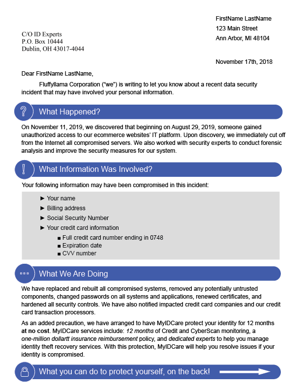
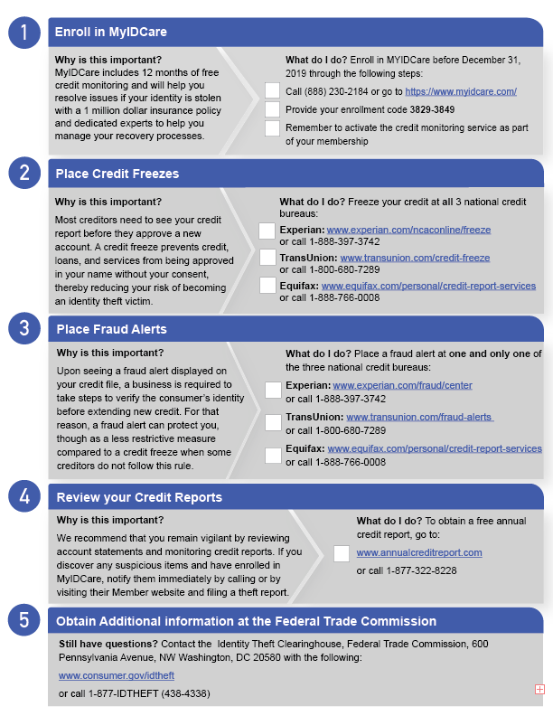

Independent Research · Collaboration with PhD candidate Yixin Zou & Professor Florian Schaub
UX Research · UX Design
Adobe Illustrator · Rev Transcription · Overleaf
Control/treatment group interviews · Recording and Transcription
Abstract
Data breach notifications are letters that companies are required to sent to affected individuals after a data breach. However, these notifications are often ineffective in motivating affected individuals to take appropriate reactive and protective actions. We present an enhanced data breach letter design that aims to improve comprehension and actionability of included information. We conducted a small-scale, between-subjects experiment comparing our design to a current breach letter. Our preliminary findings indicate that our design increases comprehensions and actionability and further provides insights for further design improvements to make data breach notifications useful and usable consumer protection tools.
Letter Redesign


Breach Notification Design
We developed our design based on representative examples of existing breach notification letters. The design instantiation shown in Figure 1 is based on a breach notification letter sent by Rail Europe North America Inc. on April 30th, 2018. Our design makes improvements in the following four areas:
Structure/overview: We increased the font size difference between headers and paragraphs to create more information hierarchy, allowing the reader to more effortlessly follow the information flow. Headers (e.g “What Happened?”) and recommended steps are highlighted in blue to mark the topic of each section and catch the reader’s attention.
Conciseness: Current breach notifications are dense, which may intimidate and deter the reader from parsing through the information. On the front page of our design, information
is condensed to a few lines under each header; on the back, a few sentences were used to describe each recommended action with checklisted steps beside it. Compared to the Rail Europe letter, we condensed the amount of text from four to two pages while retaining all key information.
Prioritization: Presenting choices in dense paragraphs can overwhelm the reader. We remedy this by numerically ordering the recommended steps from most to least urgent/effective. We list provided compensation (a free credit monitoring service for one year) first, followed by credit freeze, fraud alert, self-monitoring on credit reports, and obtaining additional information. We further used stylized arrows to guide the reader through the letter and the steps.The reader would read the large, blue headers first, then read left to right, starting with “Why is this important?” and moving to the “What can I do?”
Actionability: Dense text and jargon can result in recommendations being inactionable for affected individuals. Our redesign removes unnecessary jargon and explicitly lays out each recommended step in a checklist form. We also bulleted and highlighted the breached information in gray to increase the urgency of the situation. To instill credibility, we designed the front of our notification to appear formal (letterhead, formal address of recipient) while maintaining consistent formatting throughout (blue headers, bubbled icons, sans serif font).
Study Protocol
We conducted a preliminary between-subjects lab study comparing our improved design (treatment) to the original letter by Rail Europe North America Inc. (control).
12 participants recruit through online forums and university email lists. Screening survey used to balance participant demographics.
Participants were asked to read the breach notification letter at their own speed. Afterwards, they took a short questionnaire that assessed their comprehension of the letter's content.
Then, we interviewed participants regarding their intended reactions, as well as their opinions of certain design features.
Participants were then compensated with 15 dollars in cash at the end of the interview.
Findings and Final Product
Data breach notifications can be a useful tool for consumers in the event of a breach, but the notifications themselves need to be engaging and informative enough to motivate affected individuals to take action. Our research shows promising avenues for increasing consumer comprehension and actionability of data breach notifications. To read more, please click here for the full Late Breaking Work paper.